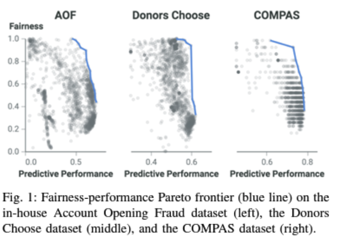

csc 510-001, (1877)
fall 2024, software engineering
Tim Menzies, timm@ieee.org, com sci, nc state
home :: syllabus :: corpus :: groups :: moodle :: license

Ethics
It is ethical to improve the revenue of your company since that money becomes wages which becomes groceries which becomes dinner so everyone and their kids can sleep better at night.
It is also ethical to change the design of software in order to ensure that (say) the software is not unduly discriminatory towards a particular social group (e.g. some groups characterized by age, race, or gender).

Ethics
SE is about choice.
- mySQL makefile: 3 billion choices.
- Linux kernel feature map = 7000 variables + 300,000 constraints
- So very many ways to configure that kernel!
What if those choices have ethical implications?
Maybe, maybe not.
Software has an increasing impact of modern society.
- They are used by geologists to predict landslides
- By biologists working to create a vaccine for HIV (2)
- Influence criminal sentencing
- Control autonomous vehicles
- enable medical advances
- Algorithmic decision making has entered many high-stakes domains, such as finance, hiring, admissions, criminal justice, and social welfare.

Unethical Software?
Is it doing so, responsibly and fairly? Maybe not.
- Google’s sentiment analyzer model which determines positive or negative sentiment, gives grossly inappropriate and socially dangerous negative score to sentences like “I am a Jew”, and “I am homosexual”
- Facial recognition software which predicts characteristics such as gender, age from images has been found to have a much higher error rate for dark-skinned women compared to light-skinned men
- A popular photo tagging app assigns animal category labels to dark skinned people.
- Some recidivism assessment models used by the criminal justice
system are more likely to falsely label black defendants as future
criminals (at twice the rate as white defendants)
- But see also Peter Sykacek’s comment on this. This issue here might have been that the software was actually age-biased, not racially-biased.
- Amazon.com stopped using automated recruiting tools after finding anti-women bias
- Predictive policing software used to deploy police to where they are most likely needed has been found to overestimate crime rates in certain areas without taking into account the possibility that more crime is observed there simply because more offenders have been sent there in the past.
Model stores
Machine learning methods can be packaged and executed in cloud “containers” (e.g. using tools likeopendatahub.io).
Many such containers are available for rent, in “Model Stores” at the AWS marketplace ];the Wolfram neural net repository and the ModelDepot [1] (see Table 1, Figure 1). Users rent these models along with the cloud-CPU needed to run them.Then, they upload their data to the cloud-based learner which later on, delivers them a model generated by a machine learner.


Model Store models have no tools for (a) detecting or (b) mitigating discriminatory bias. - This is troubling these models are susceptible to issues of unfairness. - That is, using Model Stores, developers can unwittingly unleash models that are highly discriminatory. - Worse yet, given the ubiquity of the internet, these discriminatory models could be unleashed on large sections of the general public.
Examples:
- hyScoreis an NLP tool which, amongst other things, performs sentiment analysis of content. hyScore accepts arbitrary free form text which, potentially, could reference social groups we might want toprotect.
- Credit Default Predictor uses 23 attributes include gender, education,age, and previous history of payments to generate an predictor of the chances a customer will default on a loan
- A Hospital Readminission model predicts the probably that a patient will not be readmitted after discharge. This model’s inputs include financial class, sex and age. Depending on the protected attributes a hospital may decide not to release the patient as the model shows high probability of readmission, while another patient with same other attributes but different protected attribute values can be released
Kinds of Ethics
The Institute for Electronics and Electrical Engineers (IEEE) has recently discussed general principles for implementing autonomous and intelligent systems (A/IS). They propose that the design of such A/IS systems satisfy certain criteria:
- Human Rights: A/IS shall be created and operated to respect, promote, and protect internationally recognized human rights.
- Well-being: A/IS creators shall adopt increased human well-being as a primary success criterion for development.
- Data Agency: A/IS creators shall empower individuals with the ability to access and securely share their data, to maintain people’s capacity to have control over their identity.
- Effectiveness: A/IS creators and operators shall provide evidence of the effectiveness and fitness for purpose of A/IS.
- Transparency: The basis of a particular A/IS decision should always be discoverable.
- Accountability: A/IS shall be created and operated to provide an unambiguous rationale for all decisions made.
- Awareness of Misuse: A/IS creators shall guard against all potential misuses and risks of A/IS in operation.
Other organizations, like Microsoft offer their own principles for AI:
- Transparency AI systems should be understandable
- Fairness: AI systems should treat all people fairly
- Inclusiveness AI systems should empower everyone and engage people
- Reliability & Safety AI systems should perform reliably and safely
- Privacy & Security: AI systems should be secure and respect privacy
- Accountability: AI systems should have algorithmic accountability
- Ethics is a rapidly evolving concept so it hardly surprising to say that mapping the stated ethical concerns of one organization (Microsoft) into another (IEEE) is not easy.
Nevertheless, the following table shows one way we might map together these two sets of ethical concerns. Note that:
- “accountability” and “transparency” appear in both the IEEE and Microsoft lists. Clearly these are concerns shared by many people.
- Missing from the Microsoft list is “effectiveness” but we would argue that what IEEE calls “effectiveness” can be expressed in terms of other Microsoft terms (see below).
- Assessed in terms of the Microsoft terminology, the IEEE goals or “well-being” and “awareness of misuse” are synonyms since they both reply on “fairness and “reliability and safely”.

The reader might dispute this mapping, perhaps saying that we have missed, or missed out, or misrepresented, some vital ethical concern. This would be a good thing since that would mean you are now engaging in discussions about software and ethics. In fact, the best thing that could happen below is that you say “that is wrong; a better way to do that would be…” As George Box said, all models are wrong; but some are useful.
In any case, what the above table does demonstrate is that:
- Large organizations are now very concerned with ethics.
- When they talk about ethics, there is much overlap in what they say.
- This is a pressing need to extend our current design thinking to include ethical considerations
Explore the choices

Ethics: Take the lead
From the IEEE:

How to fix Bias? (with algorithms)
How not to fix
Why not just remove the protected attribute (age, gender,etc) - Empirically, does not work - We tried it - Almost no change in bias metrics even after that. - Why? - attributes are connected - so removing on thing still keeps the bias in the all the others. - e.g. 2016, Amazon Prime same day delivery. - highly discriminatory against black neighborhood - excluded minority neighborhoods in Boston, Atlanta, Chicago, Dallas, New York City, and Washington, D.C., - while extending the service to white neighborhoods - Model trained on “zip code” which can be a surrogate for “race” (given racial separation in many major US cities). - Poor observed correlation zip code to race - But connected via the labels “good Delvers” “slower Delivery”
Recognize that bias is inevitable
- All data mining is biased
- without bias, uou can’t ignore things
- without ignoring things, can’t prune
- without pruning, no summarization into a model
- without a model, can’t predict the future
- So bias makes us blind and bias lets us see
- Some bias is good
- prefer simple models over complex ones
- prefer models that suggest fewest changes
- prefer models that can be quickly updated
- But some bias can get you into trouble Data contains many models
The “best” model is assesses using criteria C1,C2,C3,C4…. - If we build models optimizing for C1,C2 (and ignroethe rest) - Then it is a random variable whether or not it satisfies C3,C4…. The thing is, all the above a huge assembly of choices made by software engineers.
So measure and check for bias
truth |
no | yes | learner
----------------------
TN | FN | silent
FP | TP | loudDivide data into groups (e.g. divide on gender, age, nationality, anything really)
- Look for differences in those groups:
- EOD= Equal Opportunity Difference:Difference of TruePositive Rates(TP) for unprivileged and privileged groups [40].
- A0D = Average Odds Difference:Average of difference in False Positive (FP) and True Positive (TP) for unprivileged and privileged groups

- Re weighting: double up or remove certain rows to adjust the results
- or give each row a magic weight to do the same thing
- Optimized pre-processing:
- again, magic weights but this time on al the decisions inside pre-pressing and the learner
- runs some optimiser to find better weightings.
- Reject options (a post processor)
- Reweighs predictions to negate known bias
- Adverbial debasing
- Mask the protected attribute.
- Given a target class X and a protected attribute Y
- maximize accuracy for X
- and minimize accuracy for Y
- So the learner you use, by definition, knows nothing of Y
Demo: AI360
More generally
Software contains choices.
SE people make choices.
SE people can make bad choices or better choices
Not clear that legal and political institutions are keeping up with the technology choice space in this area. - So It is up to us.
Case Studies
https://www.scu.edu/ethics/focus-areas/technology-ethics/resources/technology-ethics-cases/
References
- Don’t Lie to Me: Avoiding Malicious Explanations with STEALTH; Lauren Alvarez, Tim Menzies; IEEE Software, April 2023
- Microsoft’s notes on AI and ethics: 2019. https://www.microsoft.com/en-us/ai/our-approach-to-ai
- IEEE and ethics: https://standards.ieee.org/content/dam/ieee-standards/standards/web/documents/other/ead/ead-for-business.pdf
- Fairway: A Way to Build Fair ML Software Authors: Joymallya Chakraborty, Suvodeep Majumder, Zhe Yu, Tim Menzies, FSE’20
- Think
Your Artificial Intelligence Software Is Fair? Think Again Rachel
K.E. Bellamy, Kuntal Dey, Michael Hind, Samuel C. Hoffman, Stephanie
Houde, Kalapriya Kannan, Pranay Lohia, Sameep Mehta, Aleksandra
Mojsilovic, Seema Nagar, Karthikeyan Natesan Ramamurthy, John Richards,
Diptikalyan Saha, Prasanna Sattigeri, Moninder Singh, Kush R. Varshney,
and Yunfeng Zhang. IEEE Software, July/August, 2019.
- See also the clairifaction from [Peter Sykacek[(https://ieeexplore.ieee.org/document/9173639)
- Preventing undesirable behavior of intelligent machines Philip S. Thomas, Bruno Castro da Silva, Andrew G. Barto, Stephen Giguere, Yuriy Brun, Emma Brunskills, Science, 366, 999–1004 (2019)3